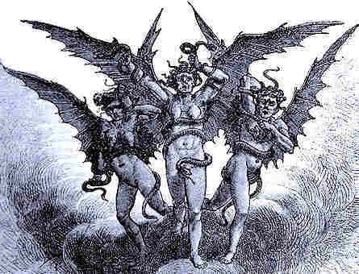
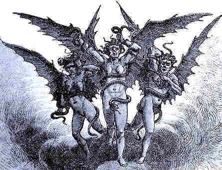

Biography
Ada Lovelace was the only legitimate child born of Lord and Lady Byron months before their separation although he had many children born out of marriage through several affairs. She never met her father as he died of disease when she was 8 years old while in the Greek War of Independence. Her mother Lady Byron actively promoted her interest in mathematics and logic in an attempt to distance her from her father and his interests. Ada was only allowed to see the family portrait after her 20th birthday.
Through her close friendship with her tutor Mary Somerville she was introduced to Charles Babbage in 1833 who famously proposed the mechanical general-purpose computer ‘The Analytical Machine’ or an early concept of a modern computer. She was regular at court and possibly due to her mother had a dislike for some of her father’s friends particularly John Hobhouse but later formed a more positive second opinion.
 

She had a loveless relationship with her mother and lived most of her childhood with her grandmother. In one of her correspondences her mother reffered to Ada as "it". Even so maintained her control over her through various acts distancing Ada from her father such as her push for scientific rather than romantic pursuits. Ada's mother had a group of her friends watch over her daughter who she referred to as the furies.